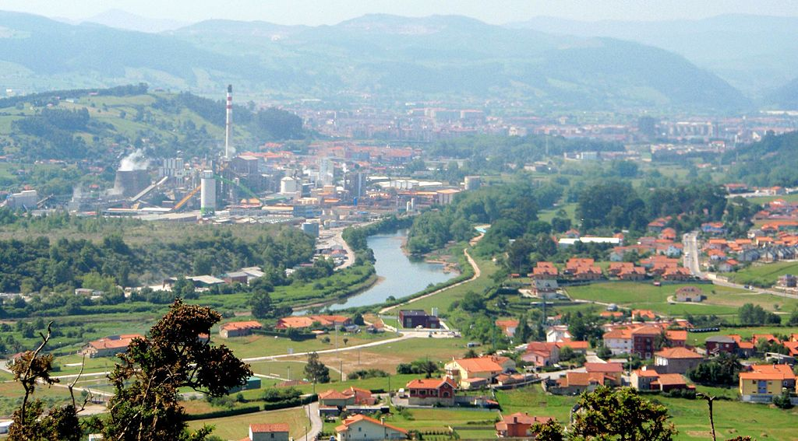
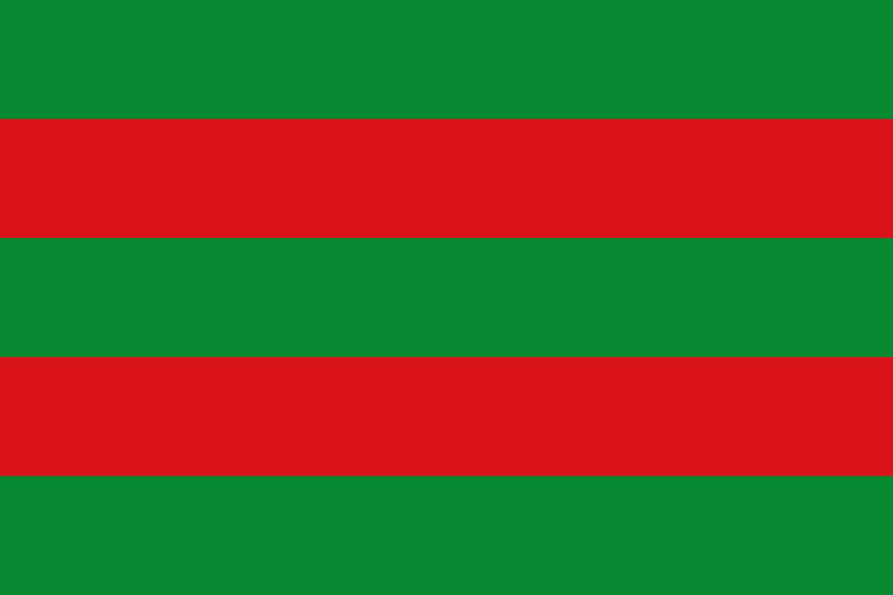

Torrelavega |
|
|
Torrelavega es un municipio y ciudad del norte de España. La ciudad es de carácter industrial y comercial, siendo el segundo núcleo urbano más relevante de la comunidad autónoma de Cantabria. Destaca en su gastronomia por las Polkas,en el deporte,con varios equipos y deportistas compitiendo en altos niveles a nivel nacional y por su cultura y su gente.
 |
Podeis visitar una pequeña reseña de algunas ciudades en los siguientes enlaces:  TorrelavegaComillasCorralesMenú principal |